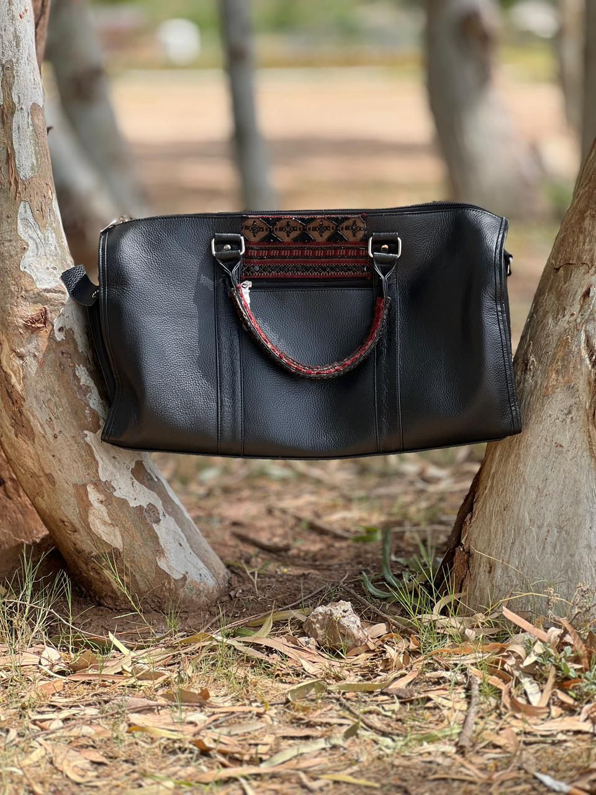

Sindh Accent Wallet
Upcycled black leather wallet with a hand-woven Swati geometric panel — intricate traditional weaving in merlot, black, and brown.

Indus Weave Backpack
Upcycled black leather backpack with a full Swati geometric weaving panel — reducing textile waste while carrying forward a living craft tradition.

River Duffle
Upcycled black leather duffle with a woven Swati handle wrap — old leather given new purpose, paired with fifteen days of handloom craftsmanship.

Bhulan Briefcase
Upcycled full-grain black leather briefcase with a Swati weaving panel — sustainability and artisan craft translated into everyday professional wear.
River Light Drape
Hand-painted silk saree in flowing merlot and brown tones, with dolphin motifs across the pallu.
Bhulan Silk
Embroidered pure silk saree with hand-worked Bhulan motifs woven into the border and pallu.